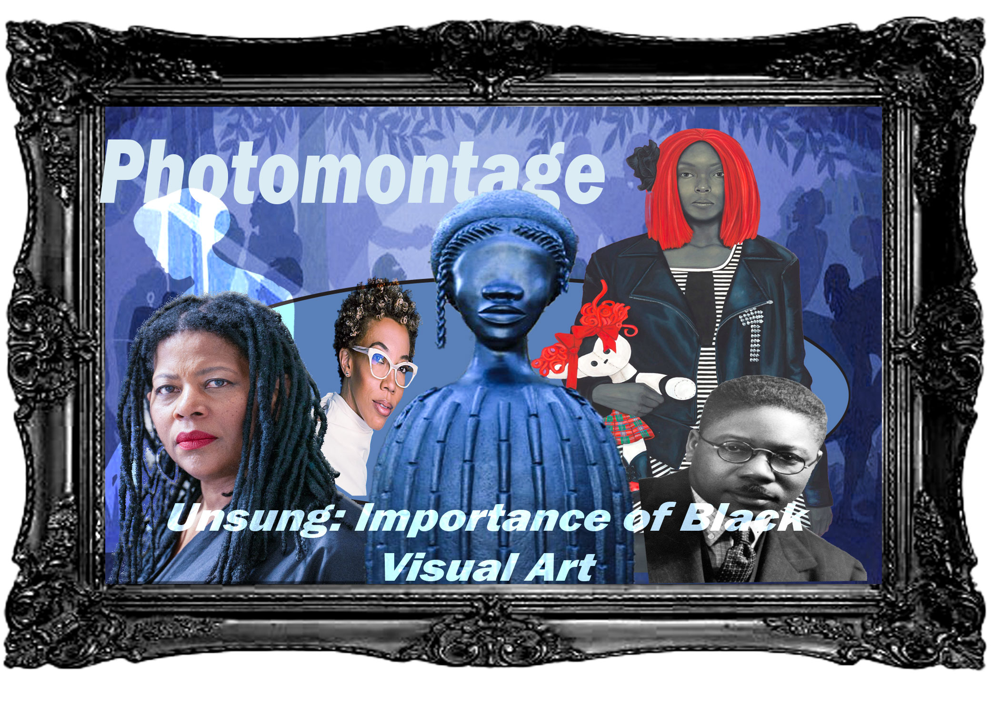
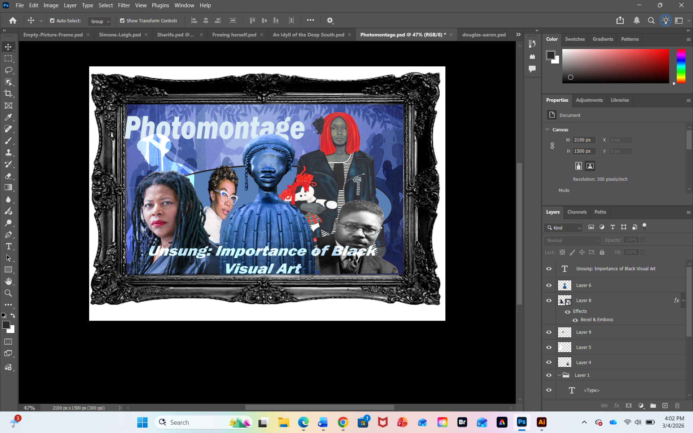

The Unsung Importance of Black Visual Art


For this assignment, my issue focuses on the historically underappreciation of Black visual art. In the photmontage, the message is that black visual art such as a painting, sculpture, or collage creates a deeper and more meaningfull story, being heavily ignored due to racism, social hiearchy inthe art world. This topic matters, because as an young black artist myself, we are often underlooked by many historians who view our work as irrelevent, where the art becomes unknown. The underappreciation of black visual art causes me to question on how and why does every famous art known globally is either euro-centric or shown to to paint negative images of black people. This topic not only introduces a new perspective, but confronts the damaging narrative by showcasing positive and encouraging imagery on black people. Black contemporary visual art especially matters, due to how it brings a significant influence to the world, inspiring other cultures in highlight cultural appreciation.
During the process, I used many techniques in Photoshop and Illustrator in creating this piece. For my images, I searched and exported them from Google Chrome as my online source in creating my photomontage. In Photoshop, I used object selection in coping and pasting my images to the canvas; then I used blending moeds such as disslove, vivid light, and overlay, while masking the images as smart objects in doing the process. For other techniques, I even utilized curves, color balance by using some of the images blend well in the photomontage, alongside blending shapes from Illustrator. In speaking of Illustrator, I used one shape where I placed behind most of how images to help bring out the message I was trying to tell in my photomontage. Overall, I chose these selections, masks, blending modes in helping my photomontage become more lively in bringing, using edited comtemporary and pre-comtemporary black art to emphasize the importance of my message.